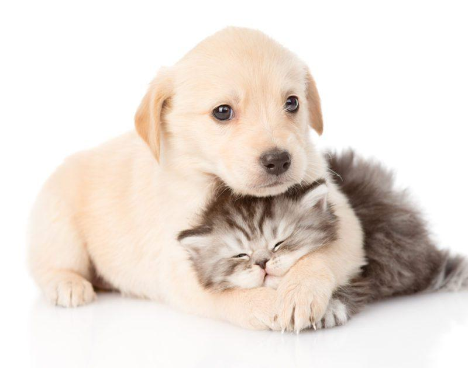

Thandi Mokoena – Founder & Director
Thandi founded PetPrints after years of informal rescue work. She oversees the overall operations and strategic direction of the organisation.
Rescuing. Rehabilitating. Rehoming.
PetPrints Animal Rescue was founded with a simple but powerful belief: every animal deserves safety, dignity, and love. What started as a small group of dedicated animal lovers has grown into a recognised non-profit organisation committed to making a lasting difference in the lives of animals in need.



The organisation began in 2018 when a group of friends started rescuing stray and injured animals in their local community. As the number of animals needing help grew, so did the team. Today, PetPrints operates with the support of volunteers, foster homes, and kind donors who share our vision.
To rescue, rehabilitate, and rehome abandoned, abused, and neglected animals, while educating the community on responsible pet ownership and the importance of spaying and neutering.
We aim to find homes for at least 30% more animals in the first year of expanded operations and to grow our network of monthly donors and active volunteers.
A South Africa where no animal suffers from neglect or abuse, and every animal has the opportunity to live a happy, healthy life in a loving home.
Our dedicated team works tirelessly to give animals a second chance.
Thandi founded PetPrints after years of informal rescue work. She oversees the overall operations and strategic direction of the organisation.
Johan manages all medical care, working closely with partner clinics to ensure every animal receives the treatment they need.
Lerato recruits, trains, and supports our network of volunteers and foster families – the backbone of our rescue work.
We are proudly supported by a growing team of passionate volunteers who help with animal care, transport, events, administration, and more.